Research report · 2026-10-09
Can a ticket pipeline build a self-healing, self-improving, self-optimizing engine?
We opened 63 GitHub issues with gh issue create (50 experiment tickets, 8 pipeline fixes, 4 re-files, 1 chaos drill) and let the OpenPearl workflow turn them into PRs and merges. The product was pearl-engine: a zero-dependency Node.js library in research/engine that retries, heals, learns and tunes itself. Everything below is measured from the GitHub API and from running the engine; the raw data is linked at the bottom.
Verdict
Mostly yes at the engine level, partly at the pipeline level, and the pipeline's own self-improvement is operator-triggered, not autonomous. The pipeline built a engine of 43 source files with 2,474 lines of source and 3,585 lines of tests, and every one of the 50 deliverables is on main (all merged, 4 only after a re-file). It repaired its own merge and monitoring gaps by merging 8 fixes to its own gates and workflows (4 of them edits to .github/workflows). But all 8 of those fixes were found and requested by a person. Only F07 gave the system its own trigger, and it covers one failure type (red tests on main).
| Goal | Pipeline (the factory) | Engine (the product) |
|---|---|---|
| Self-healing | Partial. 17/17 merge conflicts resolved automatically. 22/34 incidents recovered with no human (65%); excluding conflicts 5/17 (29%). Red-main MTTR: 66 and 95 min by hand vs 106 s automatic. | Strong in simulation. At 30% injected faults success rises 71.5% → 99.2%; at 60%, 41.1% → 87.9%. |
| Self-improving | Weak. It implements fixes it is asked for (8 of 8 merged, merge-failure rate 4/24 → 0/31), but it never proposed one on its own except through the watchdog. | Good. Thompson-sampling selection cuts regret 200 → 12.1 (94%) and picks the best arm 95% of the time. |
| Self-optimizing | None observed. Mean run time rose from 190 s (first 25) to 234 s (last 25). No pipeline setting tuned itself. | Mixed. Adaptive timeout: 493 → 27 false timeouts; tuner beats random search 31.0x at 160 evals; adaptive cache TTL gains only 1.8 pt hit rate. |
Engine scorecard (computed by the engine's own scorecard() from measured values; the mapping of measurements to its inputs is ours and is a proxy): healing 95, improving 95.9, optimizing 67.5, overall 87 / 100.
fail yet mergedMethod
- Target:
research/engine, ESM, no dependencies, tests withnode:test, every module small and deterministic (injected clock and RNG). - 50 tickets in 6 phases: 10 core, 10 self-healing, 10 self-improving, 10 self-optimizing, 5 measurement, 5 trap tickets (ambiguous request, seeded bug, two simultaneous edits of one file, an impossible requirement).
- Dispatch: issues were opened in waves (3 at a time, then 2 after the rate-limit incident). A wave never contained a ticket that depends on another in the same wave, except the deliberate conflicting pair E48/E49.
- Pipeline under test: unmodified
issue-to-pr.ymlwith Claude Code on Bedrock, 2 review rounds,AUTO_MERGE=1(eval and guards skipped). - Metrics:
research/harness/collect.pyreads runs, issues, PRs and comments throughgh.engine_eval.mjsmeasures the product.charts.pyandreport.pyproduce this page.
Results: the pipeline
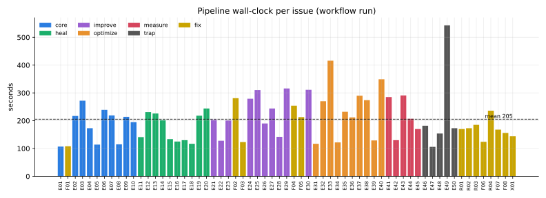
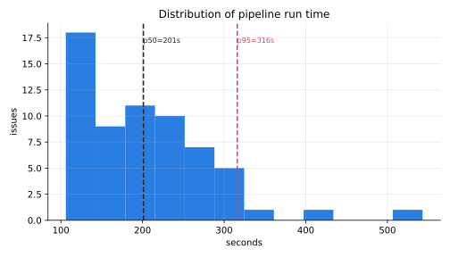
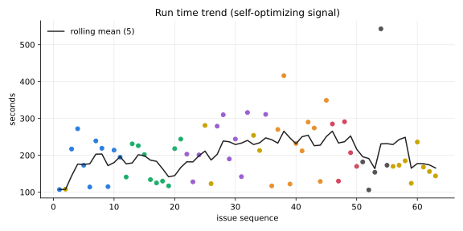
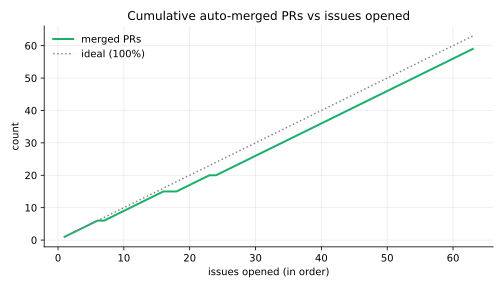
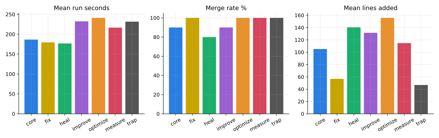
| Phase | Tickets | Merged | Mean run (s) | Mean lines added | Review rounds with findings |
|---|---|---|---|---|---|
| core | 10 | 9 | 186 | 105 | 9 |
| fix | 13 | 13 | 180 | 57 | 15 |
| heal | 10 | 8 | 177 | 140 | 5 |
| improve | 10 | 9 | 232 | 132 | 12 |
| optimize | 10 | 10 | 241 | 156 | 10 |
| measure | 5 | 5 | 217 | 115 | 4 |
| trap | 5 | 5 | 232 | 47 | 4 |
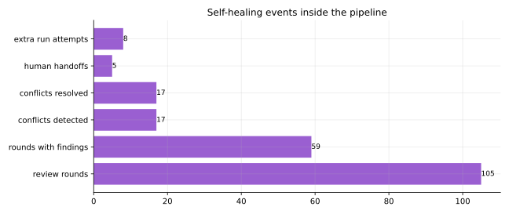
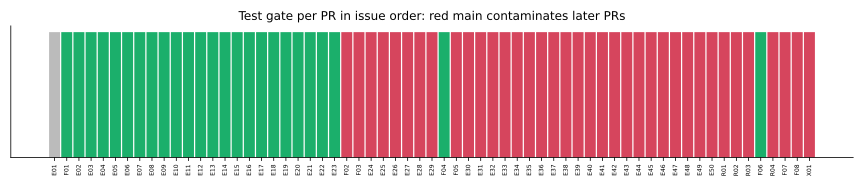
fail on 37 PRs, which all merged because AUTO_MERGE skips the guard. Red tests on main propagate to every later PR.">fail on 37 PRs, which all merged because AUTO_MERGE skips the guard. Red tests on main propagate to every later PR.Test evidence is thin. In 29 of 63 PR summaries the agent says it did not run the tests, and the only independent evidence is the gate, which was blind until F01 and then red for most of the run.
Incidents, fixes and what each fix achieved
| Id | Finding | Fix (via gh issue create) | Effect | Requested by |
|---|---|---|---|---|
| F01 | Test gate ran nothing: Tests: none for research PRs | Root package.json with scripts.test | Next PRs reported Tests: pass | operator |
| F02 | Merge race: base moved after the eval, gh pr merge failed; 4 of 24 early PRs needed a human | Bounded re-sync + conflict-resolve + retry loop around the merge | 3 merge retries fired, all 3 merged; failures 4/24 → 0/31 | operator |
| F03 | Engine npm test failed on Node 24 (my own spec bug) | Explicit test glob in package script | Merged; script passes | operator |
| F04 | AUTO_MERGE let red tests onto main | Fix two failing tests | Green for about 1 minute: E29 (a rerun finishing concurrently) re-broke main, then E35 added another red test | operator |
| F05 | GitHub secondary rate limit killed 4 runs at step 1 (~40 min) | gh_retry backoff helper for all comment calls | Not re-triggered after the fix, so unverified under load | operator |
| F06 | Main red again (two more tests) | Fix two failing tests | Green: 380/380 | operator |
| F07 | Nothing watched main; 37 PRs gated fail | New main-watchdog.yml opens a main-red issue | Caught 2 of 2 red-main events with no human action after the merge; MTTR 7.5 min and 1.8 min | operator (the watchdog itself); detection and repair are automatic |
| F08 | Early-step failures were never retried | Retry workflow also reruns failures before the agent starts | Not triggered since, so unverified | operator |
| R01-R04 | E06/E16/E17/E23 PRs stuck (merge race) | Re-filed the same tickets | 4 of 4 merged on the first retry | operator |
| Incident class | Count | Recovered with no human |
|---|---|---|
| merge conflicts with main | 17 | 17 |
| merge race (before F02) | 4 | 0 |
| merge race (after F02) | 3 | 3 |
| rate-limit run kills | 4 | 0 |
| red main (before F07) | 2 | 0 |
| red main (after F07) | 2 | 2 |
| test-gate blind spot | 1 | 0 |
| broken package script | 1 | 0 |
| Total | 34 | 22 (65%) |
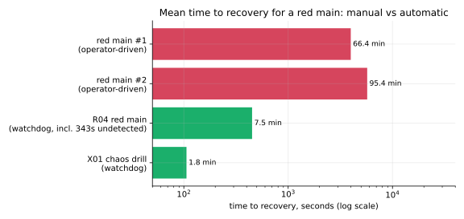
Trap tickets: all five merged. The seeded backoff bug (E47) was fixed with new tests (we did not verify that a failing test was written first); the two simultaneous runner.js edits (E48/E49) conflicted and were resolved with both features kept; the impossible requirement (E50) was answered with honest failure diagnostics instead of faked success; the ambiguous “make it faster” (E46) became a scoped cache micro-optimization with a test. No trap was refused or escalated to a human, which is also a risk: nothing questioned an ambiguous ticket.
Results: the engine
43 source files, 2,474 source lines, 3,585 test lines, 392 passing tests at the end of the run.
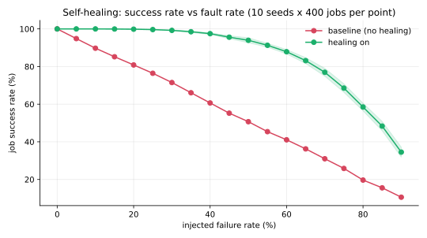
| Injected fault rate | Baseline success | Healing success | Gain | Mean attempts | p95 latency (virtual ms) |
|---|---|---|---|---|---|
| 10% | 89.8% | 100.0% ±0.0 | +10.3 pt | 1.00 → 1.11 | 10 → 25 |
| 20% | 80.9% | 99.9% ±0.2 | +19.0 pt | 1.00 → 1.24 | 10 → 26 |
| 30% | 71.5% | 99.2% ±0.2 | +27.7 pt | 1.00 → 1.40 | 10 → 40 |
| 50% | 50.7% | 94.0% ±1.3 | +43.3 pt | 1.00 → 1.86 | 10 → 55 |
| 60% | 41.1% | 87.9% ±1.2 | +46.8 pt | 1.00 → 2.16 | 10 → 55 |
| 80% | 19.7% | 58.5% ±2.0 | +38.8 pt | 1.00 → 2.97 | 10 → 55 |
| 90% | 10.6% | 34.5% ±2.7 | +23.9 pt | 1.00 → 3.44 | 10 → 55 |
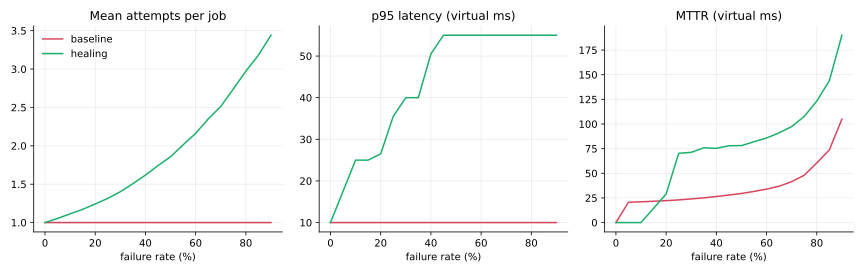
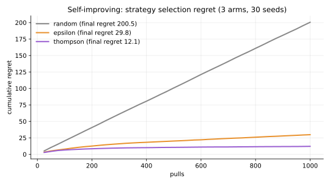
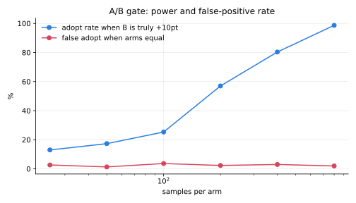
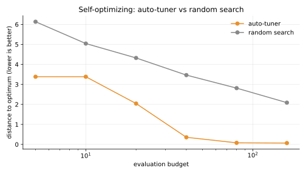
| Evaluation budget | Auto-tuner error | Random-search error |
|---|---|---|
| 5 | 3.38 | 6.13 |
| 10 | 3.38 | 5.04 |
| 20 | 2.04 | 4.32 |
| 40 | 0.36 | 3.47 |
| 80 | 0.08 | 2.81 |
| 160 | 0.07 | 2.09 |
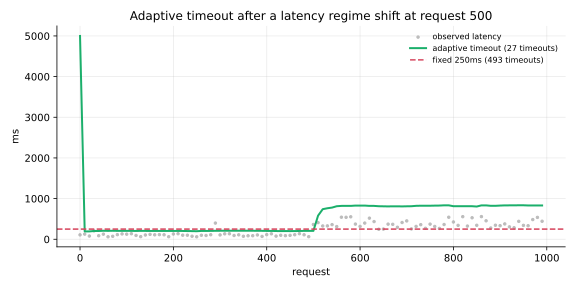
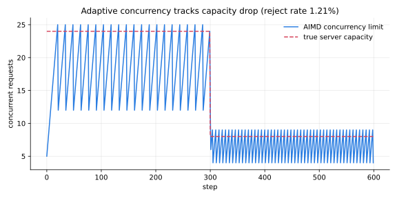
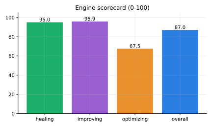
Cache result is small: adaptive TTL raised hit rate from 16.1% to 17.9% on a skewed 5,000-request workload.
Scenario coverage is inflated. scenarios.json lists 12 scenarios but the simulator only models a failure rate, so latency-spike and corruption scenarios reproduce the plain fault-rate results: 12 scenarios yield 8 distinct outcomes. A ticket (E44) asked for these scenarios, and the pipeline built them to spec without noticing the simulator could not honor them.
Review
Self-healing
Works for failures the pipeline already has a rule for: conflicts (17/17), merge races after F02 (3/3), red tests on main after F07 (2/2). It does not work for failures nobody wrote a rule for. The run-killing rate limit needed 8 manual reruns, and the comment-chat agent cannot run git fetch/merge, so it could not rescue stale PRs. F05 and F08 target those but were never exercised afterwards. Healing here is a growing set of hand-reviewed rules, not general repair.
Self-improving
The pipeline is a capable implementer of improvements: 8 of 8 requested fixes merged, including four edits to its own workflow files. What it does not do is decide what to improve. The only autonomous improvement path is the watchdog, which converts a red npm test into a ticket. Nothing mines failed runs, slow runs or repeated review findings into tickets (the engine has a module for that, issuedraft.js, which is not wired to the pipeline).
Self-optimizing
No pipeline parameter changed itself. Review rounds, diff limits, wave size and concurrency were fixed or hand-set (wave size was lowered by the operator after the rate-limit incident). Run time got worse as the repo grew. The engine contains tuners and adaptive components that perform as designed in simulation, but nothing applies them to the pipeline.
Threats to validity
- One run, one model, no repeats. Timings include GitHub queueing and the rate-limit incident; no confidence intervals for pipeline metrics.
- The same model family writes the code, reviews it and judges it, with
AUTO_MERGE=1bypassing the independent eval. Test pass rates here do not show that the code is correct. - The engine is evaluated in simulation with synthetic faults and virtual time; production behavior is untested.
- The scorecard maps measurements to its inputs by our own choice (for example A/B power stands in for regression coverage). Treat the 0-100 numbers as illustrative.
- Operator interventions are part of the data: 8 manual reruns, 5 rate-limit probe comments, 1 chat nudge, 1 PR-merge attempt that was blocked, and the choice of which findings became fix tickets.
- The incident ledger counts are our classification.
Recommendations
- Do not run
AUTO_MERGE=1without a test gate. At least block when the gate saysfail: 37 PRs merged red. - Keep F07 and extend the watchdog to failed workflow runs, so F05/F08-style incidents open tickets too.
- Serialize or queue merges, or keep shared registries such as
index.jsout of tickets: that file caused the original merge races. - Feed run metrics (duration, retries, findings per PR) back into settings such as review rounds and wave size, with an A/B gate like the engine's
compareArms. - Make the agent challenge under-specified tickets instead of silently picking an interpretation (E46).
Reproduce and raw data
python3 -I research/harness/collect.py # gh API -> research/data/metrics.json|csv
node research/harness/engine_eval.mjs # engine measurements -> research/data/engine-eval.json
python3 -I research/harness/charts.py # docs/research/*.svg
python3 -I research/harness/report.py # this pageData: metrics.csv, metrics.json, engine-eval.json. Code and harness: research/.